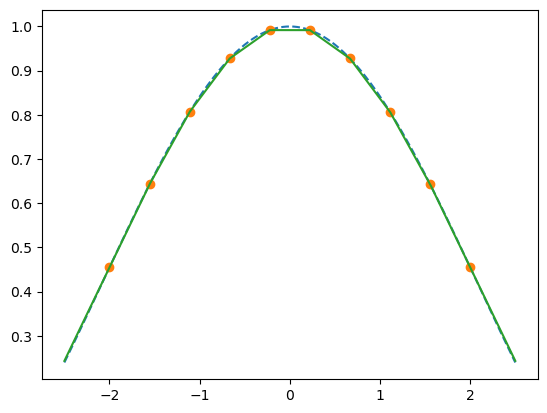

import numpy as npMethods
Optimization and root finding
Exercise 1 Consider the function \(f(x,y)=1-(x-x_0)^2-0.5(y-y_0)^2\) with \(x_0=0.5\) and \(y_0=1.0\). Check the documentation for scipy.optimize. Use it to maximze function \(f\).
x_0 = 0.5
y_0 = 1.0# one needs to define $f$ as a function of a vector
f = lambda v: 1-(v[0]-x_0)**2-0.5*(v[1]-y_0)**2f(np.array([0.2, 0.2]))0.59from scipy.optimize import minimize
sol = minimize(
lambda u: -f(u), # note the - here because we want to maximize
np.array([0.2, 0.2])
)
sol message: Optimization terminated successfully.
success: True
status: 0
fun: -0.9999999999999428
x: [ 5.000e-01 1.000e+00]
nit: 6
jac: [ 2.906e-07 -2.682e-07]
hess_inv: [[ 5.041e-01 -7.380e-03]
[-7.380e-03 1.013e+00]]
nfev: 21
njev: 7sol.xarray([0.50000014, 0.99999973])Consider the function \(g(x)=0.1+exp(-x)x(1-x)\) over [0,2]. Choose the scipy function and find the root of \(g\).
from numpy import exp
g = lambda v: 0.1 + exp(-v)*v*(1-v)# let's visualize the function
# we see it has a root between 0 and 2 and another one smaller than 0
from matplotlib import pyplot as plt
xvec = np.linspace(-0.2,2.1)
plt.plot(xvec, g(xvec))
plt.plot(xvec, xvec*0, linestyle='--')from scipy.optimize import rootsol = root(g, 0.1)
sol # converges to the wrong solution message: The solution converged.
success: True
status: 1
fun: [ 1.388e-17]
x: [-8.470e-02]
method: hybr
nfev: 12
fjac: [[-1.000e+00]]
r: [-1.373e+00]
qtf: [ 1.585e-14]sol = root(g, 1)
sol # converges to the wrong solution message: The solution converged.
success: True
status: 1
fun: [ 6.939e-17]
x: [ 1.281e+00]
method: hybr
nfev: 9
fjac: [[-1.000e+00]]
r: [ 3.339e-01]
qtf: [-9.682e-11]g(sol.x)array([6.9388939e-17])Consider the function \(h(x,y)=[0.1+exp(-x)x(1-y), x-y]\). Choose the scipy function and find the root of \(g\). to find the root of \(g\)?
g = lambda v: np.array([0.1 + exp(-v[0])*v[0]*(1-v[1]), v[0]-v[1]])
sol = root(g, np.array([1.0, 0.0]))
sol message: The solution converged.
success: True
status: 1
fun: [ 1.388e-16 0.000e+00]
x: [ 1.281e+00 1.281e+00]
method: hybr
nfev: 10
fjac: [[-1.507e-02 -9.999e-01]
[ 9.999e-01 -1.507e-02]]
r: [-1.000e+00 1.005e+00 -3.338e-01]
qtf: [-2.710e-12 1.799e-10]sol.xarray([1.28105226, 1.28105226])g(sol.x)array([1.38777878e-16, 0.00000000e+00])Interpolation
We consider the function \(f(x) = sinc(\lambda x) = \frac{sin(\lambda x)}{\lambda x}\). Let \(I=(x_i)_{i=[1,10]}\) be a regularly spaced interval between -2 and +2, containing 10 points. Call \(Y=(y_i)=f(x_i)\) the values of \(f\) on this interval. Let \(T\) be a test set with 1000 regularly spaced points between -2.5 and 2.5.
The goal is to compare several ways interpolate function f on \(T\).
Exercise 2 Define f, I, Y, T with numpy.
# this is a pure python
def f_pure(x, λ):
from math import sin
if x==0:
return 1.0
else:
return sin(λ*x)/(λ*x)f_pure(2.0, 0.1)
# f(np.array([1.5, 2.0]), 0.1)
# doesn't work with vector because of:
# 1. conditional statement
# 2. math.sin does not vectorize0.09933466539753061# we can use numpy syntax:
I = np.linspace(-2, 2, 10)
Y = np.where(I==0, 1., np.sin(I)/I) # we choose $lambda=1$ heredef f(x, λ):
return np.where(x==0, 1., np.sin(x*λ)/(λ*x))T = np.linspace(-2.5,2.5,1000)
plt.plot(T,f(T,0.5))
plt.plot(T,f(T,1))
plt.plot(T,f(T,2))
plt.plot(T,f(T,3))Exercise 3 Construct a stepwise approximation using numpy indexing
indices = np.searchsorted(I, T)
stepwise = Y[np.minimum(indices,9)]
plt.plot(T, stepwise,label="step")
plt.plot(T,f(T,1),label="true")# We could do a better one by averaging two subsequent values
indices = np.searchsorted(I, T)-1
stepwise = (Y[np.minimum(indices+1,9)] + Y[np.maximum(indices,0)])/2
plt.plot(T, stepwise,label="step")
plt.plot(T,f(T,1),label="true")Exercise 4 Plot it
# done aboveExercise 5 Construct a linear approximation using numpy
# instead of averageing two values, we can use a linear weighting scheme as follows:
indices = np.minimum( np.searchsorted(I, T)-1, 8 )
indices = np.maximum( indices, 0 )
x_i = I[indices]
x_ii = I[indices+1]
y_i = Y[indices]
y_ii = Y[indices+1]
lam = (T-x_i)/(x_ii-x_i)
#
V = y_i + lam*(y_ii-y_i)
# lam = np.arange(0,len(T))/100-indices
plt.plot(T,f(T,1),label="true", linestyle="--")
plt.plot(I, Y, 'o', label="data")
plt.plot(T, V, label="interpolated")
Exercise 6 Use scipy.interpolate to interpolate the data linearly. Compare the various extrapolation options.
import scipy.interpolate
V_lin = scipy.interpolate.interp1d(I,Y, fill_value="extrapolate")(T)Exercise 7 Use scipy.interpolate to interolate the data with cubic splines. Compare the various extrapolation options.
import scipy.interpolate
V_cub = scipy.interpolate.interp1d(I,Y, fill_value="extrapolate", kind='cubic')(T)Exercise 8 Plot the results
# lam = np.arange(0,len(T))/100-indices
plt.plot(T,f(T,1),label="true", linestyle="--")
plt.plot(I, Y, 'o', label="data")
plt.plot(T, V_lin, label="linear")
plt.plot(T, V_cub, label="cubic")
plt.legend(loc="upper right")Discretization
Exercise 9 Consider the AR1 process \(y_t = \rho y_{t-1} + \epsilon_t\) where \(\rho=0.9\) and \(\epsilon_t=0.01\). Use the quantecon library to discretize \((y_t)\) as a discrete markov chain.
import quantecon as qeρ = 0.9
σ_e = 0.01# let's create a 5 states markov chain
mc = qe.rouwenhorst(5, ρ, σ_e)/tmp/ipykernel_244104/1860833655.py:3: UserWarning: The API of rouwenhorst has changed from `rouwenhorst(n, ybar, sigma, rho)` to `rouwenhorst(n, rho, sigma, mu=0.)`. To find more details please visit: https://github.com/QuantEcon/QuantEcon.py/issues/663.
mc = qe.rouwenhorst(5, ρ, σ_e)# the result is a markov chain with 5 states:
mc.state_valuesarray([-0.04588315, -0.02294157, 0. , 0.02294157, 0.04588315])# and transition matrix
display(mc.P)
mc.P.sum(axis=1)
# mc.Parray([[8.1450625e-01, 1.7147500e-01, 1.3537500e-02, 4.7500000e-04,
6.2500000e-06],
[4.2868750e-02, 8.2127500e-01, 1.2896250e-01, 6.7750000e-03,
1.1875000e-04],
[2.2562500e-03, 8.5975000e-02, 8.2353750e-01, 8.5975000e-02,
2.2562500e-03],
[1.1875000e-04, 6.7750000e-03, 1.2896250e-01, 8.2127500e-01,
4.2868750e-02],
[6.2500000e-06, 4.7500000e-04, 1.3537500e-02, 1.7147500e-01,
8.1450625e-01]])array([1., 1., 1., 1., 1.])# the markov chain object has a few useful methods:
sim = mc.simulate(1000)from matplotlib import pyplot as plt
plt.plot(sim)# Let's check the resulting standard deviation: it should be σ_e/sqrt(1-ρ^2)
import math
(float(sim.std()), σ_e/math.sqrt(1-ρ**2))(0.024400345122667085, 0.022941573387056182)Exercise 10 Suppose \(\epsilon\) follows a normal law with standard deviation \(σ = 0.05\). Take γ = 40 and define \(U(x)=(x^{-γ})/(-γ)\) We want to compute \(C(\epsilon) = \mathbb{E} [U(exp(\epsilon)) ]\).
- Choose \(N>0\) and construct a 1d vector with \(N\) realizations of \(\epsilon\). Use it to compute the expectation.
- Estimate the standard deviation of this expectation.
- Use gauss-hermite method from numpy to compute the same expectation.
- Compare both methods.
σ = 0.05; γ = 40
from math import exp
import numpy as np
from numpy.random import normal
from matplotlib import pyplot as plt
U = lambda x: (x**(1-γ))/(1-γ)
V = lambda e: U(exp(e))def E_ϵ(f, N=100):
"""Compute expectation with Monte-Carlo
- f function to integrate
- N number of draws
"""
gen = (f(normal()*σ) for e in range(N)) # generator
return sum(gen)/NE_ϵ(V)-0.20717372707127818# let's compare results with different number of draws
NVec = [1000, 5000, 10000, 15000, 20000]
vals = [E_ϵ(V, N=i) for i in NVec]from matplotlib import pyplot as pltplt.plot(NVec, vals)
E_ϵ(V, N=100)-0.1343058368156526# We can also use monte-carlo to compute the standard deviation of the estimator
def stdev(f, N=100, K=100):
gen = (E_ε(f,N=N) for k in range(K))
return np.std([*gen])
sdvals = [stdev(V, N=n, K=100) for n in NVec] plt.plot(NVec, sdvals)
plt.ylim(0,0.04)from numpy import polynomial
from math import sqrt,pix, w = polynomial.hermite_e.hermegauss(8)
x = x*σ # renormalize nodes
s = sum(
w_*V(x_) for (x_,w_) in zip(x,w)
)/sqrt(pi)/sqrt(2)
# print(s)s-0.17164225728611746# very close to the value we got with monte-carlo[-0.1462255238404466,
-0.16630505411295535,
-0.18120122126588545,
-0.17337884704032133,
-0.1691531386839286]# let's plot everything together
plt.plot(NVec, vals, label="Monte-Carlo (dashed: SD)", color='C0')
plt.plot(NVec, np.array(vals)+np.array(sdvals), linestyle='--', color='C0')
plt.plot(NVec, np.array(vals)-np.array(sdvals), linestyle='--', color='C0')
plt.plot(NVec, [s]*len(NVec), color='C1', label="Hermite")
plt.xlabel("Number of draws")
plt.ylabel("Value")
plt.legend()
plt.title("Monte-Carlo vs Hermite quadrature")Text(0.5, 1.0, 'Monte-Carlo vs Hermite quadrature')xarray([-7.61904854, -6.51059016, -5.57873881, -4.73458133, -3.94396735,
-3.18901482, -2.45866361, -1.74524732, -1.04294535, -0.34696416,
0.34696416, 1.04294535, 1.74524732, 2.45866361, 3.18901482,
3.94396735, 4.73458133, 5.57873881, 6.51059016, 7.61904854])